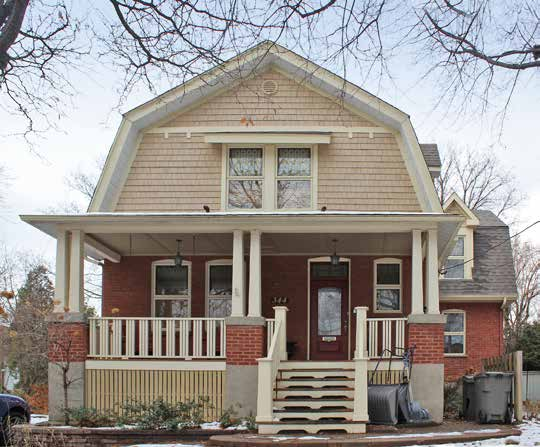
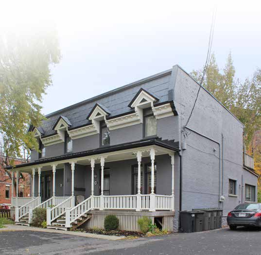

| Place | Local name | Phase years | Storeys | Roof | Window | Cladding | Garage |
|---|---|---|---|---|---|---|---|
| Le Plateau-Mont-Royal (borough of Montréal) | Detached urban house La maison urbaine isolée | 1845 – 1880 | 2–3 | flat | – | stone | none |
| Le Plateau-Mont-Royal (borough of Montréal) | Duplex with front setback Le duplex avec marge de recul avant | 1880 – 1914 | 2 | flat-or-false-mansard | vertical-2to1 | clay-brick, rusticated-stone | none |
| Le Plateau-Mont-Royal (borough of Montréal) | Row urban house La maison urbaine contiguë | 1880 – 1914 | 2–3 | flat | – | stone, clay-brick | none |
| Saint-Lambert | Mansard-roofed house of Second Empire influence La maison à mansarde d'influence Second Empire | 1875 – 1930 | 2 | mansard | vertical | clay-brick, roughcast, wood | none |
| Saint-Lambert | Boomtown house with false mansard La maison Boomtown à fausse mansarde | 1875 – 1930 | 2 | false-mansard | vertical | clay-brick, roughcast, wood | none |

